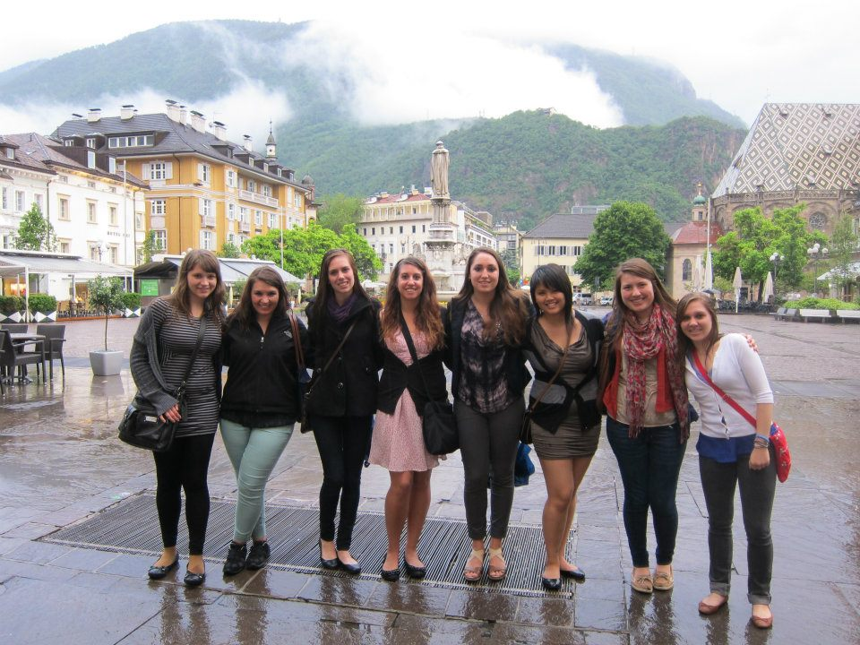
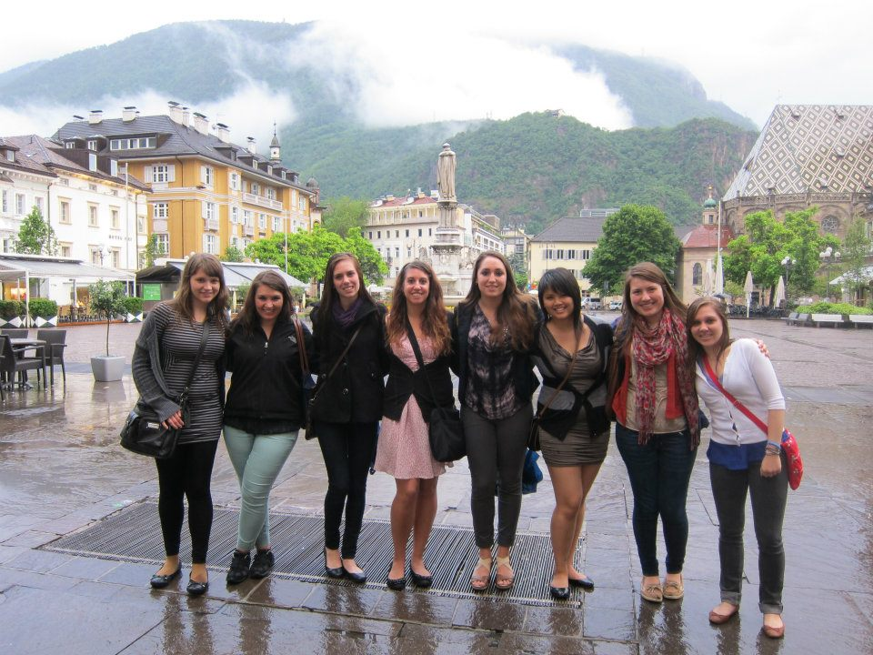

Education
Work Experience
Extracurricular Activities
The 2012 inaugural International Corporate Tour was a chance to visit companies across Europe. We visited BP and ALCOA in England, Whirlpool in Italy, and Bosch, Eaton, and Rampa in Germany.
 
